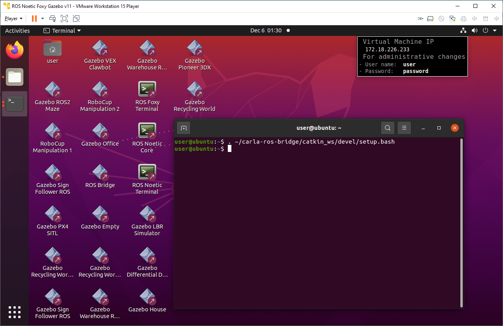
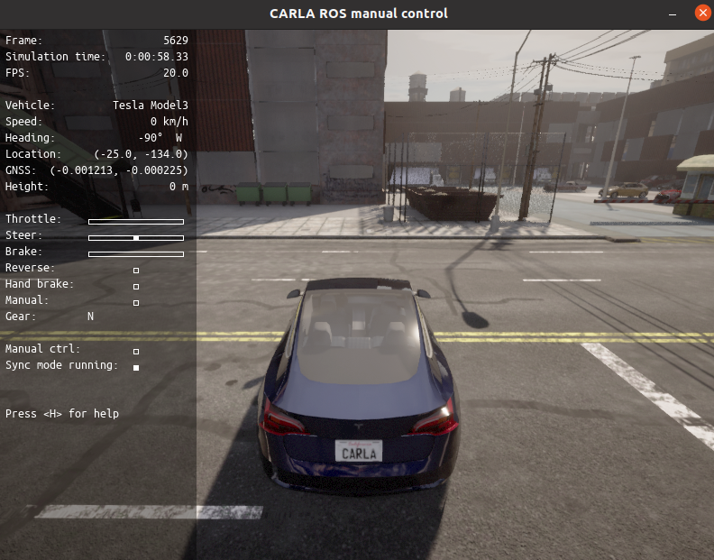
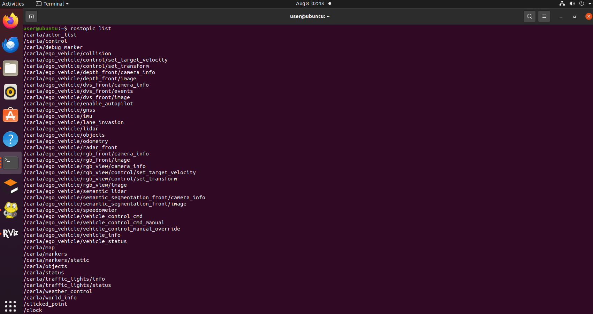
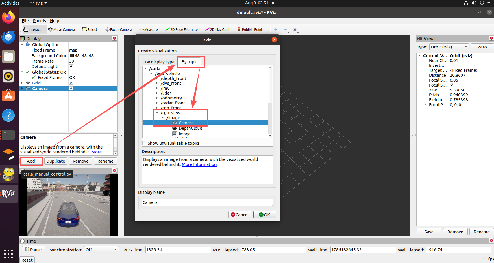
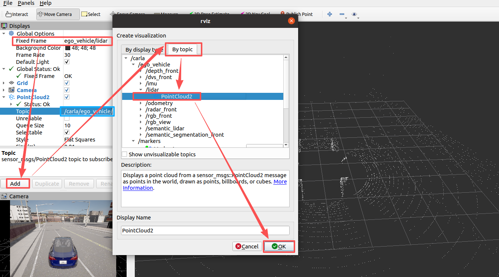
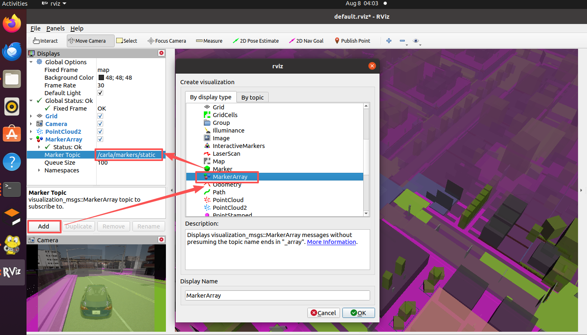

设置并连接到 Carla 模拟器
此示例展示如何设置并连接到 Carla 模拟器来模拟自动驾驶应用程序。
您可以利用 Carla 模拟器复制从城市到高速公路的各种驾驶场景，并在受控虚拟环境中评估其自动驾驶算法的有效性。该模拟器包括各种传感器模型、车辆动力学和交通状况，使用户可以模拟真实世界的设置。您可以向车辆控制发布者发送转向、制动和油门控制信号，并控制 Carla Ego 车辆并研究自动驾驶的各种元素。
从 链接 中下载 Carla 0.9.13 版本的模拟器。如果您使用的是 Windows 机器，请同时下载并安装好 ROS 的虚拟机。此虚拟机基于 Ubuntu Linux 操作系统，并已预先配置为支持使用 ROS 构建的应用程序。
此示例在 Windows 主机上演示。
启动 Carla 服务器
要在 Windows 主机上启动 Carla 服务器，请导航到 Carla 的安装位置并单击应用程序可执行文件CarlaUE4.exe。

设置 Carla ROS Bridge
1.启动虚拟机。
2.在 Ubuntu 桌面上，单击 ROS Noetic Core Terminal 快捷方式以启动 ROS 主控。主控启动后，记下 ROS_MASTER_URI。
3.在 Ubuntu 桌面上，单击 ROS Noetic Terminal 快捷方式以启动 ROS 终端。运行此命令以设置 Carla ROS 桥接环境。
. ~/carla-ros-bridge/catkin_ws/devel/setup.bash
# 或者运行
source ~/carla-ros-bridge/catkin_ws/devel/setup.bash
为了每次启动终端时不用每次都设置环境，可以将其加入到用户的初始化脚本中：
echo 'source ~/carla-ros-bridge/catkin_ws/devel/setup.bash' >> ~/.bashrc
source ~/.bashrc使用 Carla 客户端启动 Ego Vehicle
在同一个终端中，运行 follow 命令以在您喜欢的 Carla 模拟器环境中启动 Ego 车辆。例如，您可以 follow 在 Carla 模拟器的 Town03 环境中运行命令以在加油站附近启动车辆。
运行此下面这一段命令，将命令中的主机地址更改为您宿主机的IP主机地址。
# ROS 1
roslaunch carla_ros_bridge carla_ros_bridge_with_example_ego_vehicle.launch host:=172.21.108.47 timeout:=60000 town:='Town03' spawn_point:=-25,-134,0.5,0,0,-90
# ROS 2
ros2 launch carla_ros_bridge carla_ros_bridge_with_example_ego_vehicle.launch.py host:=172.21.108.47 timeout:=60000 town:='Town03' spawn_point:=-25,-134,0.5,0,0,-90注意： 如果按B切换到手动驾驶后，按W、A、S、D没反应，需要将 numpy 的版本 从 1.24.4 降到 numpy 1.23.1，避免报错：AttributeError: module 'numpy' has no attribute 'bool'
python -m pip install numpy==1.23.1
要手动驾驶车辆，请按“B”。按“H”查看说明。
注意
您宿主机windows的IP地址通过ipconfig命令进行查看，一般和这里172.21.108.47的不一致，IP地址不正确只能看到黑屏。从 Town10HD_Opt 切换到 Town03 需要一定的时间，也会出现黑屏，这是正常现象
其他
在默认的 Town10HD_Opt 地图上启动手动控制（只修改参数 town），
roslaunch carla_ros_bridge carla_ros_bridge_with_example_ego_vehicle.launch host:=172.21.108.47 timeout:=60000 town:='Carla/Maps/Town10HD_Opt' spawn_point:=-25,-134,0.5,0,0,-90
使用 rviz 进行可视化
-
查看主题
rostopic list
-
启动 RVIZ
rosrun rviz rviz -
在 RVIZ 中按主题添加相机，即可在左下角看到模拟器的实时相机数据

-
可视化雷达

-
Marker Topic（标记话题）：显示发出的 3D 图形

Matlab 验证 Carla ROS 连接（可选）
将 Matlab 连接到在 VM Ware 中运行的 ROS 主机的 11311 端口。
# 注意命令中的IP地址需要改为虚拟机中的地址，通过ifconfig查看
rosinit( 'http://172.18.226.233:11311' )通过运行以下自省命令，验证您是否可以访问与 Carla 模拟器相关的 ROS 主题。
rostopic list解析
该 carla_ros_bridge_with_example_ego_vehicle.launch 文件包含 3 个启动步骤
-
ROS 桥 carla_ros_bridge.launch 用于连接模拟器
常见问题
-
执行 roslaunch 报错
报错信息：AttributeError: 'CarlaRosBridge' object has no attribute 'shutdown'
File "/home/user/carla-ros-bridge/catkin_ws/src/ros-bridge/carla_ros_bridge/src/carla_ros_bridge/bridge.py", line 349, in destroy self.shutdown.set() AttributeError: 'CarlaRosBridge' object has no attribute 'shutdown'解决：Carla服务端的版本切换到 0.9.13。 杀死2000端口的CarlaUE4.exe进程，重新启动（通过ros来实现从Town10切换到Town03地图）。
-
AttributeError: module 'numpy' has no attribute 'bool'. 报错信息：
File "/home/user/.local/lib/python3.8/site-packages/numpy/__init__.py", line 305, in __getattr__ raise AttributeError(__former_attrs__[attr]) AttributeError: module 'numpy' has no attribute 'bool'.原因：原来的numpy版本为 1.24.4
解决：
pip install numpy==1.23.1